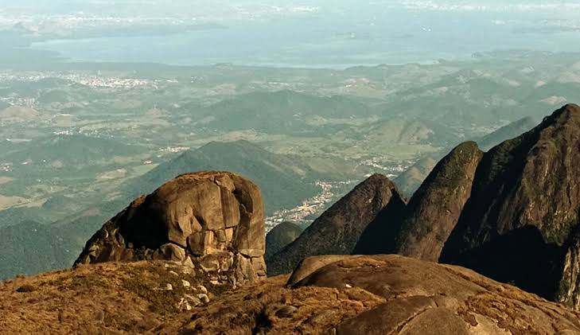
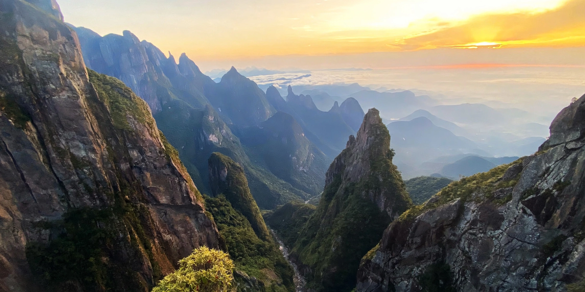
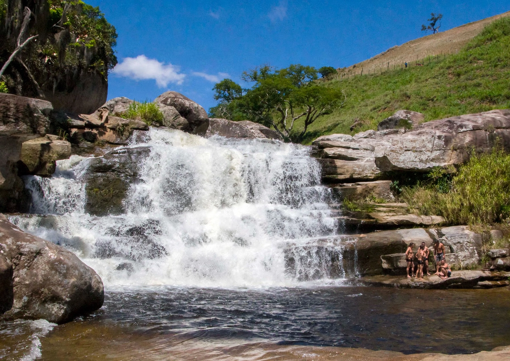
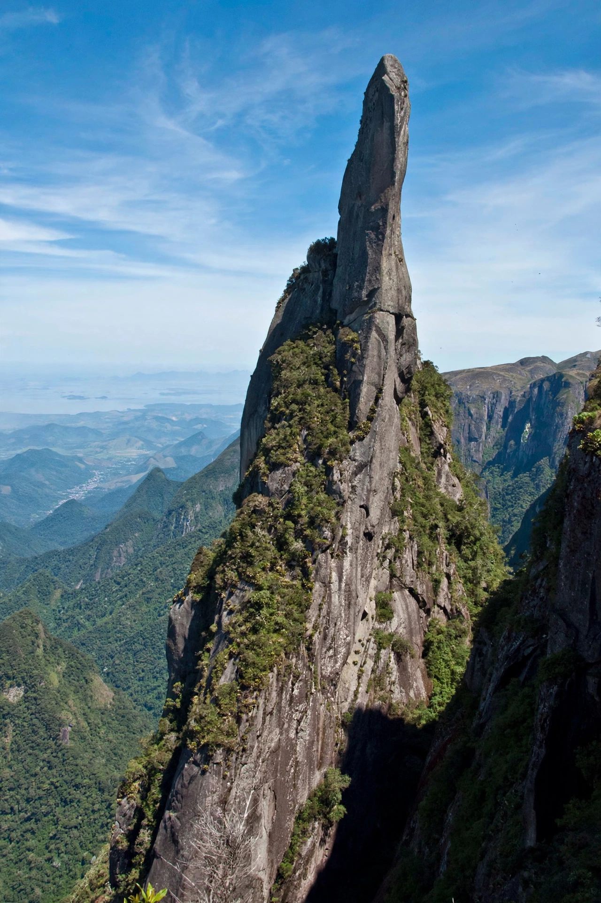

Trilhas de Teresópolis
Descubra as melhores trilhas da região, com diferentes níveis de dificuldade, desde caminhadas familiares até desafios para aventureiros experientes.

DifícilPedra do Sino
Ponto mais alto da Serra dos Órgãos. Trilha tradicional com paisagens deslumbrantes.
Ver Detalhes Difícil
Difícil
Travessia Petrópolis × Teresópolis
Considerada a travessia mais bonita do Brasil, percorre o coração da Serra dos Órgãos.
Ver Detalhes
ModeradaVale dos Deuses × Vale dos Frades
Montanhas imponentes, acampamento e cumes como Caixa de Fósforos e Cabeça de Dragão.
Ver Detalhes
ModeradaDois Bicos + Cachoeira dos Frades
Trilha de 1 dia com vista deslumbrante e banho nas águas cristalinas da cachoeira.
Ver Detalhes
DifícilAgulha do Diabo
Um dos mais belos mirantes do PARNASO, de frente para uma das montanhas mais bonitas do mundo.
Ver Detalhes